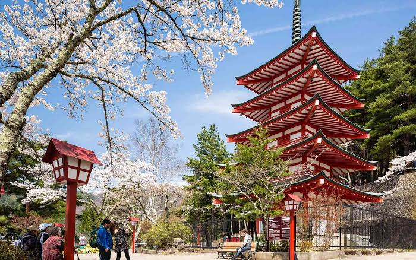
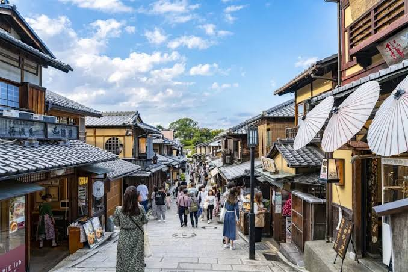
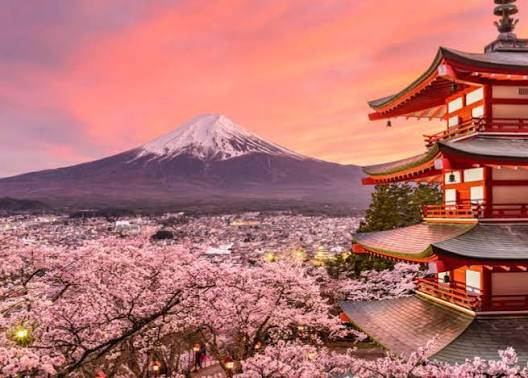
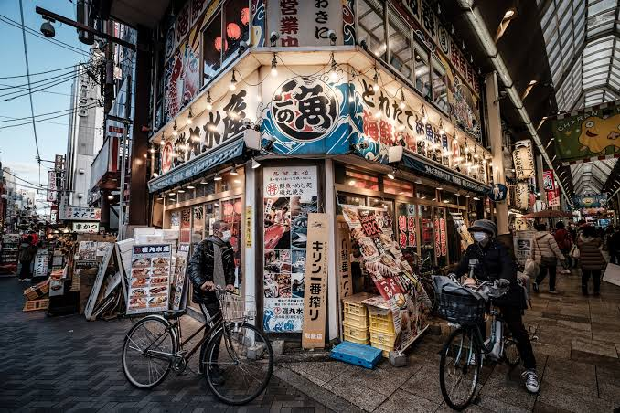
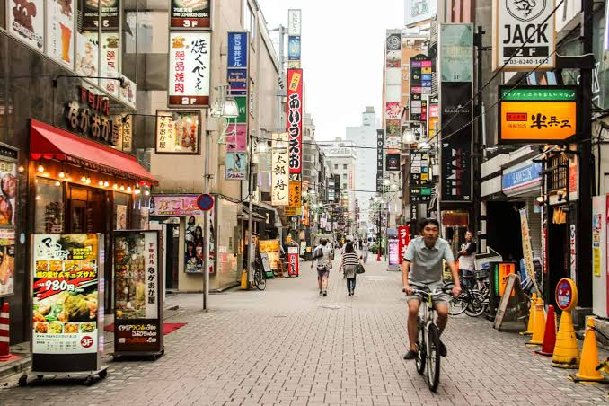

Discover the classic Golden Route of Japan. Experience high-speed bullet trains, traditional ryokans, ancient shrines, and the bustling food stalls of Dotonbori.
Arrive at Tokyo (Narita or Haneda) airport. Take a private transfer to your hotel located in Shinjuku. After refreshing, enjoy an evening walking tour through Shinjuku's neon-lit alleyways and witness the famous Shibuya Crossing.
Explore the highlights of Tokyo. Visit the ancient Senso-ji Temple in Asakusa and stroll through the traditional Nakamise shopping street. In the afternoon, dive into pop culture hubs: the electronics and anime capital of Akihabara and the trendy boutiques of Harajuku's Takeshita Street.
Start your morning with a fresh breakfast at the Tsukiji Outer Fish Market. In the afternoon, visit the digital art exhibition at teamLab Planets (optional entry). Conclude the day with a panoramic sunset view from the observation deck of Tokyo Tower.
Board a bullet train to Odawara and proceed to Hakone. Climb to the 5th Station of Mount Fuji for breathtaking views of the sacred peak. Take a scenic sightseeing boat cruise on Lake Ashi and check into a traditional Japanese ryokan complete with natural hot spring baths (onsen).
Catch a bullet train to Kyoto. In the afternoon, walk through the iconic Fushimi Inari Shrine and hike beneath thousands of vibrant orange torii gates. End your evening walking through the historic Gion district, where you might catch a glimpse of a geisha.
Explore Kyoto's legendary cultural heritage. Walk through the towering Arashiyama Bamboo Grove. Visit Kinkaku-ji, the beautiful Zen temple covered in gold leaf. In the afternoon, experience a traditional tea ceremony and explore the food stalls at Nishiki Market.
Take a morning trip to Nara, Japan's first permanent capital. Walk through Nara Park, home to hundreds of free-roaming, bowing sika deer. Visit Todai-ji Temple, one of the world's largest wooden buildings housing a massive bronze Great Buddha. Transfer to Osaka in the evening.
Visit the grand Osaka Castle and learn about the city's samurai history. Spend the afternoon shopping in the Shinsaibashi arcade. In the evening, explore Dotonbori, Osaka's famous street food district. Enjoy a farewell dinner featuring local takoyaki and okonomiyaki.
Enjoy a final morning at leisure in Osaka. Check out of your hotel and take a private group transfer to Kansai International Airport (KIX) for your return flight home.
A glimpse of ancient wooden temples, bamboo groves, and lush valleys.



